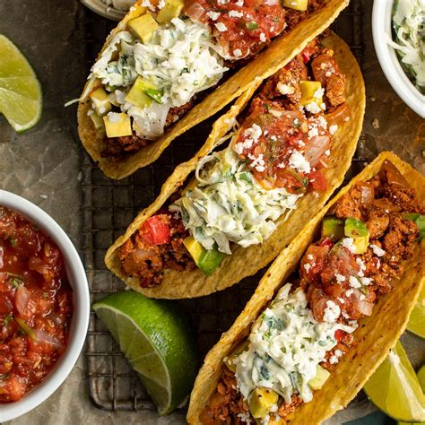
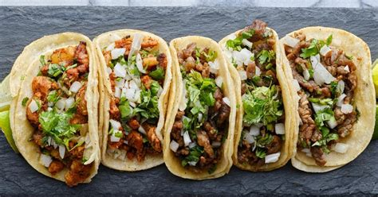

Tacos
Who does'nt love a nice hot taco, whether its a cold day in the winter or a nice hot day in the summer. Its hard to turn down a tasty taco when its offered, I would like to cover a couple different styles of tacos as we go further.

Street Taco
The humble street taco is a very versitle taco, this taco can be found in many different places. The only way in my own opinion to eat a street taco is directly from a taco truck. Theres just something about the tacos from a taco truck, they are almost impossible to beat. There are several different kinds of tacos for you to choose from and its hard to go wrong with any of them!
The Birria Taco
This little fella has become my favorite as of late. a delicious taco filled with shredded beef covered in a chili pepper consome, covered with queso, and then given some of the consome to dip the taco in. Oh man this is most definitely the one you need to go get!